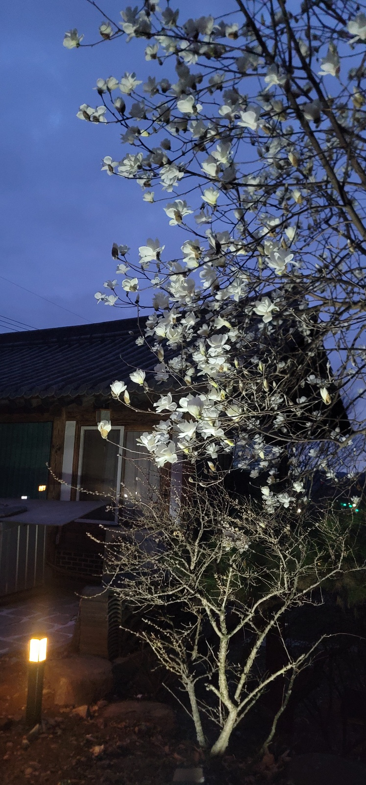

Philosophy
공간의 이야기

오랜 시간을 견뎌온 나무의 숨결
서촌별곡은 한옥이 지닌 시간의 결을 존중하며, 현대의 휴식 방식에 맞게 재해석한 공간입니다. 오래된 목재와 흙, 그리고 절제된 편의가 균형을 이루어 머무는 내내 마음의 속도를 낮춰줍니다. 아침에는 처마 끝으로 스며드는 빛을, 밤에는 마당 위로 내려앉는 정적을 느껴보세요. 이곳에서의 하루는 여행보다 깊은 쉼에 가깝습니다.